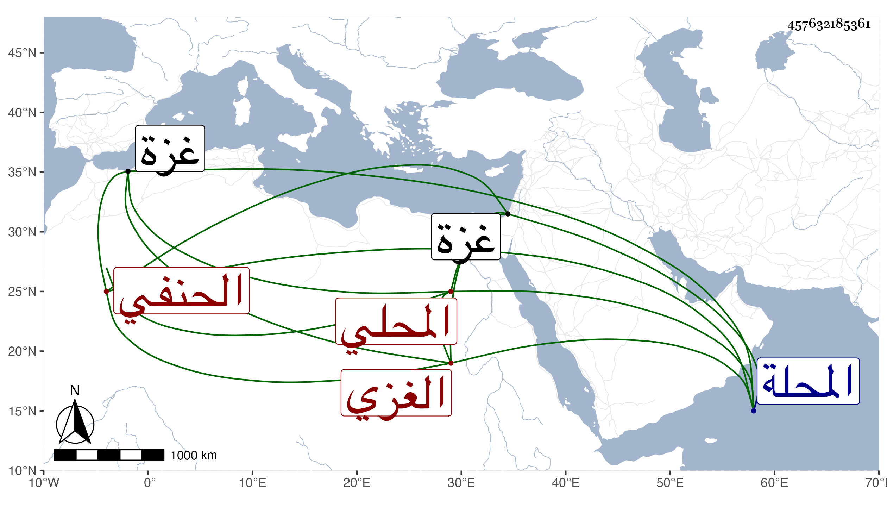

0902Sakhawi.DawLamic.ITO20230111-ara1.EIS1600.457632185361
Biography ID: 457632185361
408
محمد بن علي بن أحمد الموفق المحلي الأصل الغزي المولد والدار الحنفي . أصله من المحلة فتحول والده منها غضبا من أقاربه إلى غزة فولد له هذا ونشأ طالب علم فأخذ عن ناصر الدين الإياسي رفيقا للعلاء الغزي إمام إينال وكان قد اختص أيضا بإينال وأقرأ أولاده . ومات بعد أن أسند وصيته لرفيقه المشار إليه ، وتزوج الصلاح الطرابلسي ابنته بعد موته واستولدها ، وكان خيرا رحمه الله وهو ابن عم علي بن محمد بن أحمد بن شيخون المدولب الماضي .
